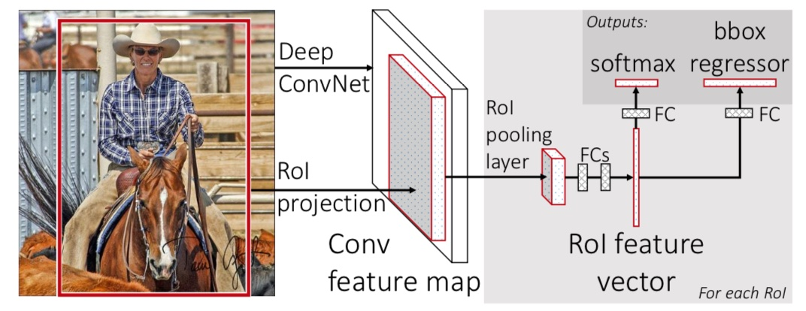

5.4 Fast R-CNN
学习目标
目标
- Fast R-CNN的与RCNN等结构的比较
- RoI pooling的过程和作用
- Fast R-CNN的训练多任务损失、超参数、小批量采样
- Fast R-CNN的困难样本挖掘过程
- Fast R-CNN算法的效果实验对比，微调、多任务、多尺度等比较
应用
- 无
SPPNet的性能已经得到很大的改善，SPP网络也有显著的缺点。像R-CNN一样，训练过程是一个多级流水线，涉及提取特征，使用log损失对网络进行微调，训练SVM分类器，最后拟合检测框回归。特征也写入磁盘。网络之间不统一训练，造成很大的麻烦，所以接下来的Fast R-CNN就是为了解决这样的问题
5.4.1 Fast R-CNN
Fast R-CNN采用了多项创新提高训练和测试速度来提高检测精度。Fast R-CNN训练非常深的VGG16网络比R-CNN快9倍，测试时间快213倍，并在PASCAL VOC上得到更高的精度。与SPPnet相比，fast R-CNN训练VGG16网络比SPPNet快3倍，测试速度快10倍，并且更准确。
5.4.1.1 Fast R-CNN原理
改进的地方：
- 提出一个RoI pooling layer，然后整合整个模型，把CNN、RoIpooling、分类器、bbox回归几个模块整个一起训练

- 步骤
- 首先将整个图片输入到一个基础卷积网络，得到整张图的feature map
- 将选择性搜索算法的结果region proposal（RoI）被池化到固定大小的feature map中
- RoI pooling layer映射到一个固定长度的特征向量，每个特征会输入到一系列全连接层，得到一个RoI特征向量（此步骤是对每一个候选区域都会进行同样的操作）
- 其中一个是传统softmax层进行分类，输出类别有K个类别加上”背景”类
- 另一个是bounding box regressor
5.4.1.2 RoI pooling
首先RoI pooling只是一个简单版本的SPP，目的是为了减少计算时间并且得出固定长度的向量。

- RoI池层使用最大池化将任何有效的RoI区域内的特征转换成具有H×W的固定空间范围的小feature map，其中H和W是超参数 它们独立于任何特定的RoI。

为什么要设计单个尺度呢？这要涉及到single scale与multi scale两者的优缺点
- single scale，直接将image定为某种scale，直接输入网络来训练即可。（Fast R-CNN）
- multi scal，也就是要生成一个金字塔
后者比前者更加准确些，没有突更多，但是第一种时间要省很多，所以实际采用的是第一个策略，因此Fast R-CNN要比SPPNet快很多也是因为这里的原因。
5.4.1.3 从预训练网络中进行训练
1、End-to-End model
从输入端到输出端直接用一个神经网络相连，整体优化目标函数。接着我们来看为什么后面的整个网络能进行统一训练？
特征提取CNN的训练和SVM分类器的训练在时间上是先后顺序，两者的训练方式独立，因此SVMs的训练Loss无法更新SPP-Layer之前的卷积层参数，去掉了SVM分类这一过程，所有特征都存储在内存中，不占用硬盘空间，形成了End-to-End模型（proposal除外，end-to-end在Faster-RCNN中得以完善）
- 使用了softmax分类
2、微调过程
用反向传播训练所有网络权重是Fast R-CNN的重要能力，提出了一种比SPPNet训练更有效的训练方法：
利用训练期间的特征共享
方法：
- 1、在Fast RCNN网络训练中，随机梯度下降（SGD）的小批量是被分层采样的，首先采样N个图像，然后从每个图像采样个 RoI。关键的是，来自同一图像的RoI在向前和向后传播中共享计算和内存。减小N，就减少了小批量的计算。例如，当N=2和R=128时，得到的训练方案比从128幅不同的图采样一个RoI（即R-CNN和SPPnet的策略）快64倍。
- 2、Fast R-CNN使用了一个精细的训练过程，在微调阶段联合优化Softmax分类器和检测框回归，而不是分别在三个独立的阶段训练softmax分类器，SVM和回归器。
下面将详细描述该过程：损失、小批量采样策略、通过RoI池化层的反向传播和SGD超参数
（1）多任务损失-Multi-task loss
Fast R-CNN网络具有两个同级输出层。
第一个输出在K+1个类别上的离散概率分布（每个RoI），。通常，通过全连接层的K+1个输出上的Softmax来计算p。
第二个输出层输出对于由K个类别中的每一个检测框回归偏移，。其中tk指定相对于候选框的尺度不变转换和对数空间高度/宽度移位。
每个训练的RoI用分类目标值和检测框回归目标值标记。我们对每个标记的RoI使用多任务损失以联合训练分类和检测框回归： 其中，表示log损失，第二个损失，是定义目标值和预测检测框的四元组之间的损失。
- 解读：其中表示，目标值存在为1和0，如果目标值为0，意味着这是一个背景RoI，所以没有真实值的概念，所以训练的时候就会被忽略了。对于检测回归来讲，我们使用下面的损失计算方式
其中： 是鲁棒的L1损失, 对于异常值比在R-CNN和SPPnet中使用的L2损失更不敏感。当目标回归值无界时，具有L2损失的训练可能需要仔细调整学习速率，以防止爆炸梯度。smooth这个公式消除了这种灵敏度。
（2）超参数设置
超参数λ控制两个任务损失之间的平衡。由于会将回归目标真值v归一化为具有零均值和单位方差。所有论文中实验都使用λ=1。就不会造成两部分损失的量纲不在一个大小。
（3）小批量采样
在微调期间，
- 1、每个SGD的小批量由N=2个图像构成，均匀地随机选择。
2、使用大小为R=128的小批量，从每个图像采样64个RoI。 如何采样: 从候选框中获取25％的RoI，这些候选框与检测框真值的IoU至少为0.5。 这些RoI只包括用前景对象类标记的样本，即u≥1。 剩余的RoI从候选框中采样，该候选框与检测框真值的最大IoU在区间[0.1,0.5)。 这些是背景样本，并用u=0标记。0.1以下的样本用来干什么？
3、在训练期间，图像以概率0.5水平翻转。不使用其他数据增强。
（4）（困难样本挖掘）hard example mining
难例挖掘与非极大值抑制 NMS 一样，都是为了解决目标检测难的问题（样本不平衡+低召回率）及其带来的副作用。
定义：难负例挖掘（Hard Negative Mining）就是在训练时，尽量多挖掘些难负例（hard negative)加入负样本集，这样会比easy negative组成的负样本集效果更好。
- 负样本过多会造成，正样本大概率被预测为负样本。因此作者使用随机抽样的方式，抽取25%正样本，75%的负样本。
- Fast RCNN 训练过程中采用的是正例:负例=1:3, 在 OHEM(online hard example mining)论文中提到, 如果训练时负例的比例如果加大的话, Fast RCNN 的 mAP 大约下降 ~3 mAP
做法：
- 全部的ROI通过网络，根据loss排序;Backward：根据排序，选择前B/N个loss值最大的（worst）样本来后向传播更新model的weights。
- 先用初始的正负样本(一般是正样本+与正样本同规模的负样本的一个子集)训练分类器, 然后再用训练出的分类器对样本进行分类, 把其中负样本中错误分类的那些样本(hard negative)放入负样本集合, 再继续训练分类器, 如此反复, 直到达到停止条件(比如分类器性能不再提升)。
- 比如：当我们第一轮用proposals【0.1<=IoU<0.5】和【IoU>=0.5】抽样的样本，训练出来的模型，去预测proposals【IoU<0.1】的样本，如果判断错误就加入hard negative的集合里，这样就实现了对proposals【IoU<0.1】的hard negatvie mining
负样本选择
- 问题：但为什么要设置proposals【0.1<=IoU<0.5】为负样本，而proposals[IoU<0.1]作为难样本挖掘(hard negative mining)呢？
- 1、那么与 ground truth 的 IOU 在 [0, 0.1)之间的由于包含物体的特征很少, 应该是很容易分类的, 也就是说是 easy negitive, 为了让算法能够更加有效, 也就是说让算法更加专注于 hard negitive examples, 我们认为 hard negitive examples 包含在[0.1, 0.5) 的可能性很大, 所以训练时, 我们就在这里 random sampling.
- 2、IOU 在[0, 0.1)之内 会被判定为真例的概率很小, 如果这种现象发生了, 可能对于我们训练网络有很大的帮助, 所以 Fast RCNN 会对与 ground truth 的 IoU 在 [0, 0.1)之内的是 example 做 hard negitive examples.
- 问题：但为什么要设置proposals【0.1<=IoU<0.5】为负样本，而proposals[IoU<0.1]作为难样本挖掘(hard negative mining)呢？
（4）SGD超参数
用于Softmax分类和检测框回归的全连接层的权重分别使用具有方差0.01和0.001的零均值高斯分布初始化，偏置初始化为0。
全局学习率为0.001，论文当对VOC07或VOC12 trainval训练时，运行SGD进行30k次小批量迭代，然后将学习率降低到0.0001，再训练10k次迭代。
5.4.1.4 Fast RCNN检测
网络将图像（或图像金字塔，编码为图像列表）和待计算概率的R个候选框的列表作为输入。在测试的时候，R通常在2000左右。使用R-CNN算法的设置和对每个类别独立执行非最大抑制
5.4.2 Fast RCNN 效果
主要的几个显著效果
- VOC07，2010和2012的最高的mAP
- 相比R-CNN，SPPnet，快速训练和测试
- 在VGG16中微调卷积层改善了mAP
实验使用了三个经过预训练的ImageNet网络模型。
第一个是来自R-CNN3的CaffeNet（实质上是AlexNet1）称之为S。第二网络是来自14的VGG_CNN_M_1024，其具有与前面模型相同的深度，但是更宽。 我们把这个网络模型称为M，即中等模型。最后一个网络具有非常深的VGG16模型。由于这个模型是最大的，称之为L。
1、VOC 2007数据集上的结果
论文比较Fast R-CNN与R-CNN和SPPnet的mAP，所有方法从相同的预训练VGG16网络开始，并使用边界框回归。作者提供在Nvidia K40 GPU上的测试时间。
| 参数 | R-CNN（S M L） | SPPNet | Fast R-CNN（S M L） |
|---|---|---|---|
| 训练时间(h) | 22 28 84 | 25 | 1.2 2.0 9.5 |
| 测试时间/图片 | 47.0s | 2.3s | 0.32s |
| mAP | 58.5 60.2 66.0 | 63.1 | 57.1 59.2 66.9 |
2、微调哪些层？
对于在SPPnet中考虑的不太深的网络，仅微调全连接层似乎足以获得良好的精度。假设这个结果不适用于非常深的网络。下图为限制哪些层对VGG16进行微调产生的影响：

允许conv1学习或不学习，对mAP没有很有意义的影响。对于VGG16，发现只需要更新conv3_1及以上（13个卷积层中的9个）的层。结果也显示
（1）从conv2_1更新使训练变慢1.3倍（12.5小时对比9.5小时）
（2）从conv1_1更新GPU内存不够用。当从conv2_1学习时mAP仅为增加0.3个点。
所有Fast R-CNN在本文中结果都使用VGG16微调层conv3_1及以上的层，所有实验用模型S和M微调层conv2及以上的层。
3、多任务训练有用吗？
为了测试这个问题，论文中训练仅中的分类损失的基准网络。1、这些基线是下表中每组的第一列。这些模型没有检测框回归。2、接下来（每组的第二列），是我们采用多任务损失（λ=1）训练的网络，但是我们在测试时禁用检测框回归。这隔离了网络的分类准确性，并允许与基准网络比较。在所有三个网络中，我们观察到多任务训练相对于单独的分类训练提高了纯分类精度。改进范围从+0.8到+1.1 个mAP点，显示了多任务学习的一致的积极效果。4、采用基线模型（仅使用分类损失进行训练），加上检测回归层，并使用回归损失训练它们，同时保持所有其他网络参数冻结。每组中的第三列显示了这种逐级训练方案的结果：mAP相对于第一列改进，但逐级训练表现不如多任务训练。

4、多尺度训练是否改善？
指定的相同的五个尺度s∈{480,576,688,864,1200}）以方便与SPPnet进行比较。但是，不能以2000像素为上限，以避免GPU内存不足。

5、是否需要更多的数据集？
当提供更多的训练数据时，好的目标检测器应该会得到改善。增加了VOC07 trainval训练集与VOC12 trainval训练集，大约增加到三倍的图像，数量达到16.5k，以评估Fast R-CNN。扩大训练集提高了VOC07测试的mAP，从66.9％到70.0％。 当对这个数据集进行训练时，我们使用60k次小批量迭代而不是40k。

其中：07 \diff：表示07没有“困难”的样本
6、SVM分类是否优于Softmax？
Fast R-CNN在微调期间使用softmax分类器学习，而不是如在R-CNN和SPPnet中训练线性SVM。为了理解这种选择的影响，论文在Fast R-CNN中实施了具有难负采样重训练的SVM训练。使用与R-CNN中相同的训练算法和超参数。

Softmax略优于SVM，mAP分别提高了0.1和0.8个点
7、更多的候选区域更好吗？
使用候选区域的稀疏集（例如，选择性搜索）和使用密集集合（例如DPM）。

论文结论：用更多的候选区域没有帮助，甚至稍微有点降低准确性。如果不实际运行实验，这个结果很难预测。用于测量候选区域质量的最先进的技术是平均召回率(AR)。
作者最后结论也是：稀疏目标候选区域似乎提高了检测器的质量。并且引出了可能存在允许密集候选框以及稀疏候选框的尚未发现的技术。这样的方法如果被开发，可以帮助进一步加速目标检测。
5.4.3 Fast R-CNN算法

- 缺点
- 使用Selective Search提取Region Proposals，没有实现真正意义上的端对端，并且没有更好的候选区域的方法
5.4.4 总结
- Fast R-CNN的与RCNN等结构的比较
- RoI pooling的过程和作用
- Fast R-CNN的训练多任务损失、超参数、小批量采样
- Fast R-CNN的困难样本挖掘过程
- Fast R-CNN算法的效果实验对比，微调、多任务、多尺度等比较